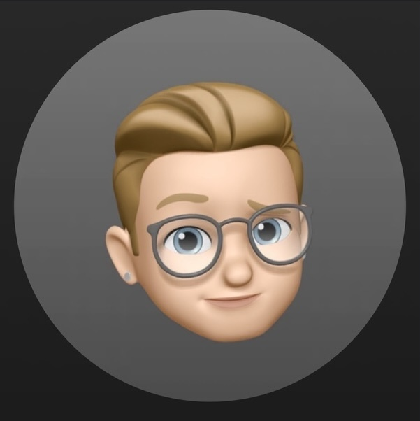

Contact Us

Anthony Sayre
About Me
Hi, my name is Anthony. I did both the frontend and backend development on this project. Beyond developing software, I have a passion for music, which influences my approach to design and problem-solving. I thrive in tackling challenges and learning new technologies to bring my projects to life.